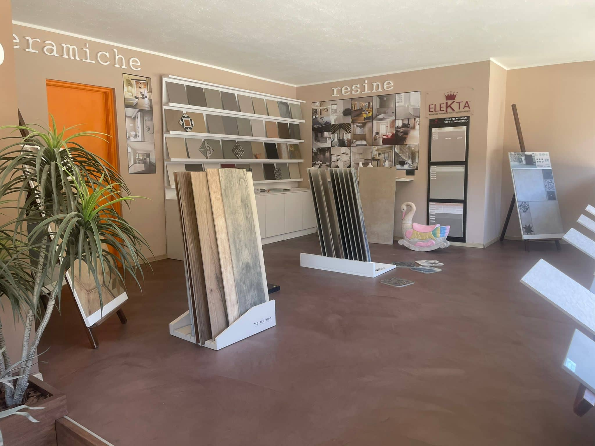
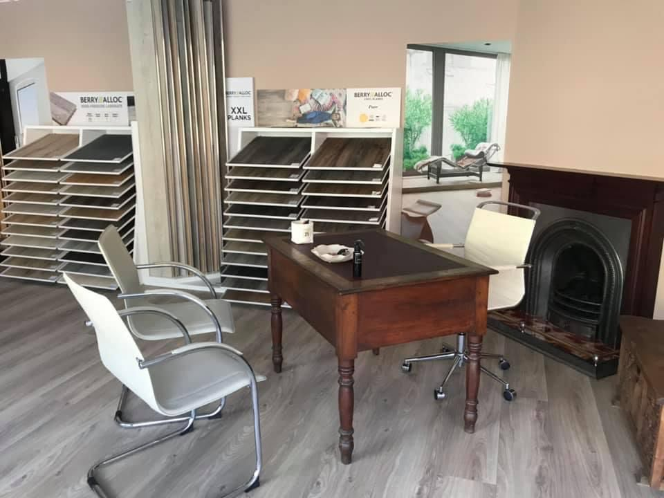

Oltre alla nostra tradizione nelle pavimentazioni, offriamo una vasta gamma di servizi e prodotti per rendere la tua casa speciale. Dalla pavimentazione in cotto e graniglia ceramica ai sanitari di design, forniamo tutto il necessario per completare la tua abitazione. Scopri i nostri complementi che aggiungeranno un tocco unico alla tua casa.
Da decenni, Mocco Snc si impegna a garantire lavori di qualità superiore in pavimenti, rivestimenti, arte funeraria e soluzioni in marmo, rispettando le esigenze specifiche di ogni cliente. La nostra esperienza nel settore, unita a una costante ricerca di innovazione e sostenibilità, ci permette di offrire soluzioni su misura che valorizzano ogni spazio abitativo. Scopri di più sul nostro patrimonio di esperienza e maestria, frutto di una lunga tradizione nel campo dei pavimenti e rivestimenti in Piemonte e Valle d'Aosta.
Mocco Snc si dedica con passione all'arte dei pavimenti e dei rivestimenti, offrendo soluzioni personalizzate in marmo, parquet, cotto e gress porcellanato. Specializzati anche nell'arte funeraria, ci impegniamo a garantire lavori di alta qualità e a soddisfare ogni tua esigenza.
